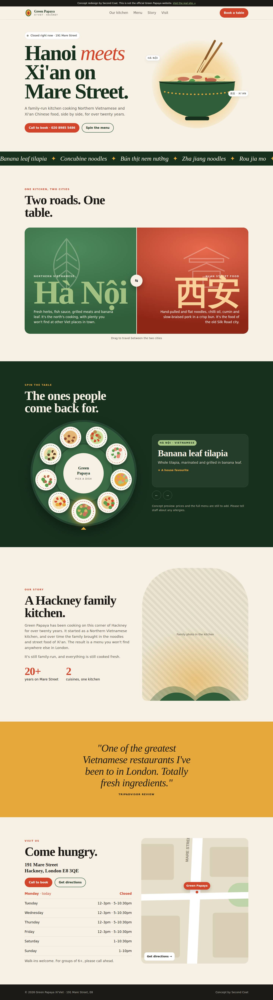
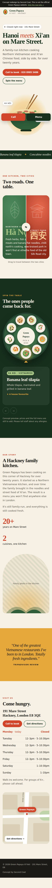

A steaming-bowl hero
An illustrated bowl with rising steam, bobbing chopsticks and herbs drifting down the page.
Two cities on one menu, and a website that finally says so.


The problems holding the old site back.
Before screenshot to come. See the original at green-papaya.com/
From public search results and business listings. A full first-hand review of the live site is part of the handover.
A fast, single-file site with no framework, built for phones first, with a signature moment only this business could own.
An illustrated bowl with rising steam, bobbing chopsticks and herbs drifting down the page.
"Open now" or "Closed right now", worked out from their real hours in London time, with today's row highlighted.
Drag between Hà Nội green and 西安 red to see both halves of the kitchen.
A lazy susan of nine signature dishes. Tap a plate and the table turns it to you, with the story of that dish.
A sticky Call and Menu bar, Restaurant schema with hours, and a one-tap directions map.
Two roads. One table.
A papaya cut in half became the logo, with the seeds as the table. The palette splits the menu in two: leaf green and young herb for Hanoi, chilli red and turmeric for Xi'an, both on warm rice paper. Fraunces gives it a generous, family-kitchen voice that feels nothing like a chain.
Win the "where do we eat tonight" search on Mare Street.
One address everywhere, the Kingsland Road listing marked closed, hours checked, and the menu added as text with photos of each signature dish.
An Instagram series that pairs one Hanoi dish with one Xi'an dish each week. Diners vote, and the winner becomes a weekend special.
A small QR card with the bill: "Enjoyed the concubine noodles? Tell Hackney." Fresh reviews are what keep them in the local map pack.
The one festival both cuisines share. A set menu and a short film of the kitchen cooking it.
Invite five local food Instagrammers to taste across both menus, with the spin-the-table site as the follow-up link.
The identity work is light. What matters is accurate hours, menus and Google listings every month, which is exactly what the Care plan covers.